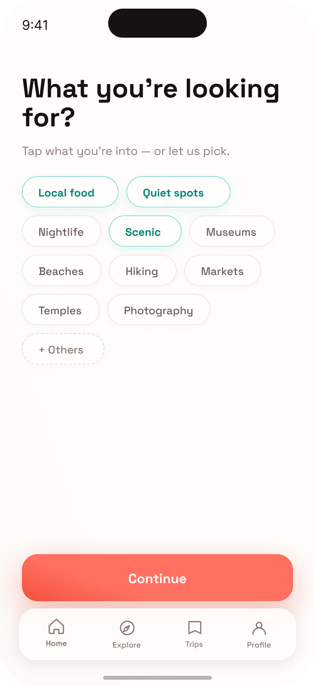
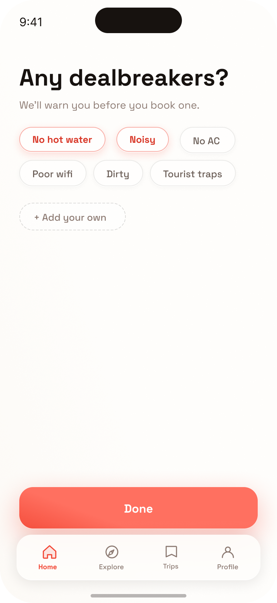
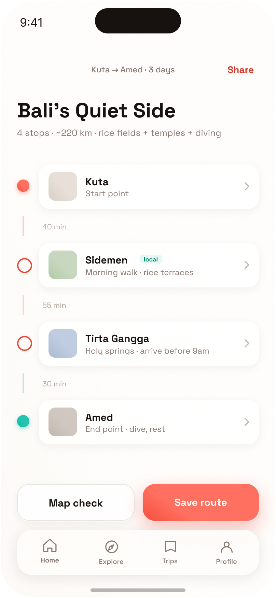
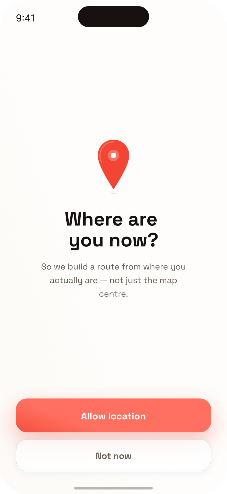
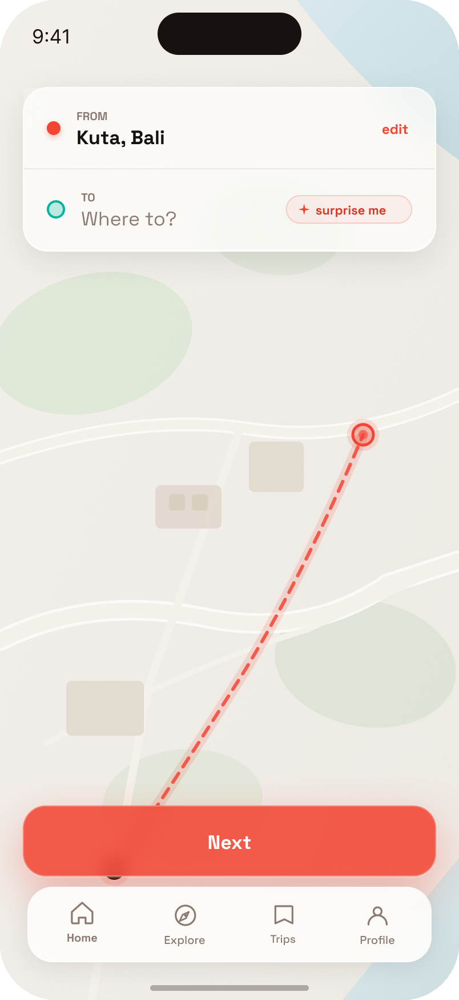
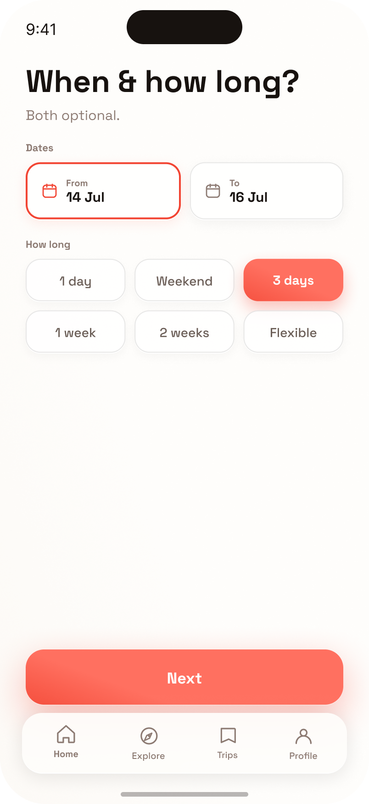
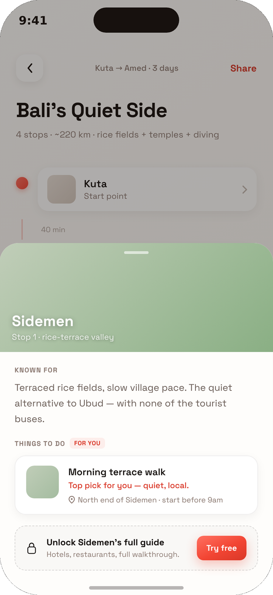
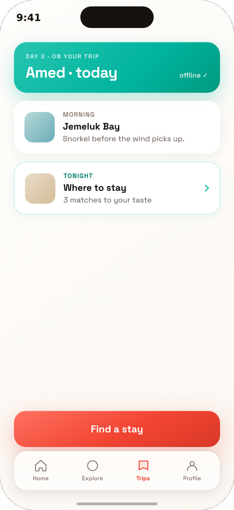
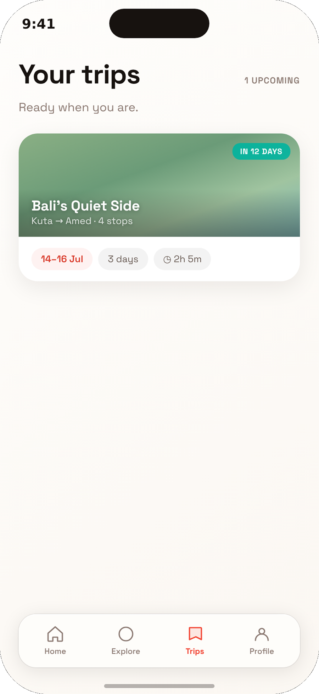

FarView plans the tedious middle of a trip. You set where you start and end, pick what you like and what you don't, and it proposes a short route of stops that fit — checkable on a map before you trust it.



People who plan their own trips spend hours reading and comparing options for the stretch between where they start and where they end. They already use AI to shortlist — but they won't take its word for it. They check the result on a map and against real reviews before booking, and nothing they use remembers what they liked or what went wrong last time.
The whole flow is built to feel like a few quick answers, then a route you can check. Here's how it moves, step by step.


You give it your location and the two ends of the trip. From there it builds the route around where you are, not the map centre. "Surprise me" picks a destination you can still change.
You tap what you're into, then flag what ruins a trip for you. The dealbreakers matter as much as the likes — it keeps you away from the things that spoil a stay, framed as protection, not a chore.

Dates and trip length, both optional, nothing blocks you. That's the last question before it builds the route.

A short route with drive times and the reason behind every stop — checkable on a map before you trust it. Open any stop for the full picture. The full per-stop guide is where the paid line sits, offered only once you're this invested.


On the trip it works offline and stays matched to your taste — surfacing what's next and where to stay, chosen around what you told it earlier. Saved routes stay in one place, ready to share or edit.
Read closely, the interviews pointed in three clear directions — each one shaped a decision in the product.
They won't accept an AI route as final. If they can't check it inside the app, they leave to check elsewhere — undoing the time it saved. So the map check had to be built in.
A star rating isn't enough. People want places chosen around their taste — and, just as much, kept away from the things that ruin a stay for them.
People reject a sales pitch on contact. That ruled out charging before any value, and pushed the paid moment to later, once they're planning enough to want no limits.
People reject a sales pitch on contact — so a hard paywall is the most sales-y opening the app could have, and it kills trust instantly. That constraint is what pointed to freemium.
A paywall on contact reads as a sales pitch, and the research said that breaks trust on the spot. So the paid moment waits until someone's planning enough to want no limits.
Travel benchmarks favor trial models, and the acquisition idea — shareable routes — needs free-user volume to work. Freemium fits the exact condition where it's the right call.